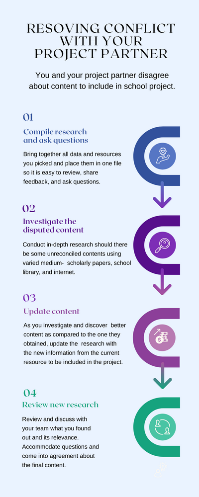

Questioning and Investigating
Questioning
Questioning is the process of asking questions to gather information, make decisions and develop insight into a topic. Asking questions can allow you to identify if there are issues with a procedure as well as gain additional facts that could influence our decision-making. It is helpful when assisting team members with advocating their message, participating in the process and defusing conflict (Mosaic Project Services P Mosaic Project Services Pty. Ltd. ty. Ltd., n.d).
Investigating
Investigation in communication is the process of gathering new knowledge and information about our messages. Investigating also requires us to assess and evaluate the information that we acquire (RRC Polytech, n.d). This is essential to communication as it allows a sender to communicate their message with confidence and allows for the opportunity to repair the message if we find some facts to be incorrect.
Example
You and your project partner disagree about content to include in school project.
Step 1:
Compile research and ask questions – You and your project partner review each other’s research. After your partner has given their feedback, you can ask questions about their research and resources they used.
Step 2:
Investigate the disputed content – After speaking with your teammate, you spend time researching using different mediums- scholarly papers, the internet, and the school library to find more information about your partner's research.
Step 3:
Update content – During the investigation process, you find one resource your partner’s research is no longer relevant as it was obtained from an older resource. Update the research with the new information from the current resource to be included in the project.
Step 4:
Review New Research - At the next meeting with your project partner, you review your updated research. Your partner asks questions about the additional information that you found, and you both come to an agreement about the content to be included in the project.